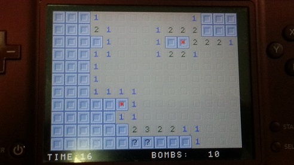
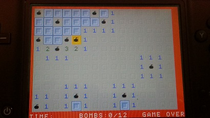
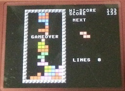
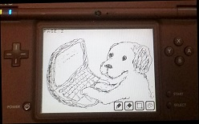

プチコン作品
ぷちぷち３級による、ニコニコ動画アップ作品や、１画面プログラムなど
地雷探し


あの有名な地雷探しゲームをプチコンで再現してみました。
※ ハイスコアセーブ時に、「MINE_SV1」というMEMファイルを使用しています。
操作方法
クリック
開く
L+ﾀｯﾁ
マーカー
落ち物ブロック

あの有名な落ち物ゲームをプチコンで再現してみました。
単純なゲームの割にプログラムリストは長いです。これが１流プログラマーと自分のような３流プログラマーの違いでしょうね。
※ ハイスコアセーブ時に、「BLOCK_SV」というMEMファイルを使用しています。
操作方法
←↓→
移動
Ａボタン
回転
電子メモ帳

最近話題の「まめも」みたいな電子メモが欲しかったので、プチコンで作ってみた。
一応、３ページ分保存できます。
鉛筆(赤,黒の２色)、消しゴム、矩形削除機能付き
※ データセーブ時に、「MEMO_SV1 ～ 3」というMEMファイルを使用しています。

蘇るBASICプログラミング プチコン公式活用テクニック
懐かしの'80年代…。マイコン雑誌に載ったプログラムリストを手打ちした、あの懐かしの時代が任天堂の携帯ゲーム機で蘇ります！
まずはサンプルプログラムで遊んでみるのもよし、オリジナルゲームをプログラミングするのもよし！
BASICは、プログラミングの原点です。プチコン唯一の公式書籍